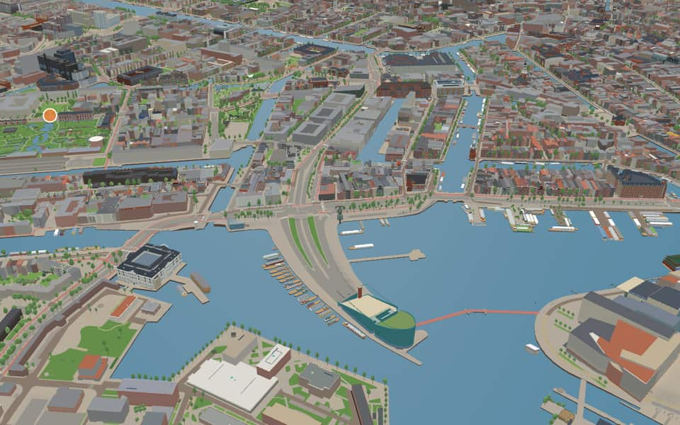
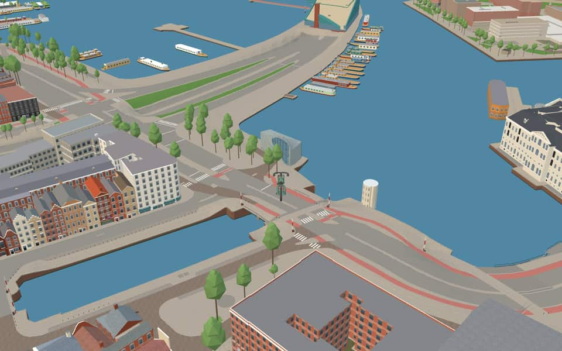
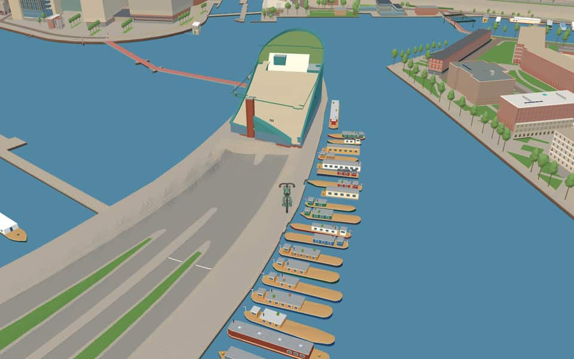
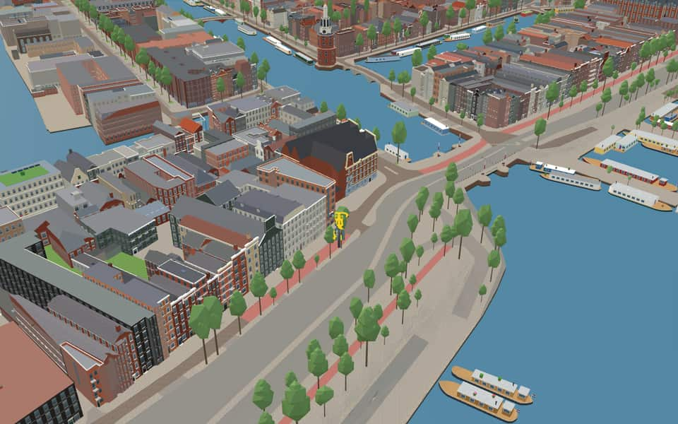

Neighbourhood in Nieuwmarkt/Lastage
Rapenburg
Rapenburg is a neighbourhood in Amsterdam, Netherlands. The main street is also called Rapenburg. Rapenburg is located in the centre of Amsterdam, on the northeastern side, close to the IJ. Rapenburg was first built in the 1590s and was home to many shipmakers, due to its location near to the IJ and the River Amstel. en.wikipedia.org
The name. The origin of the name is unknown. The main street took its name from the island. nl.wikipedia.org


In the game
Frames from a ride through Rapenburg.




6 more photos of Rapenburg


.jpg){kind=link}


Built here
Buildings modelled one by one for the ride.
Arcam — Amsterdam Centre for Architecture
NEMO Science Museum
West Indian Warehouse
- No picture yet
- No picture yet
NEMO deck
Did you know
Trivia the ride can show you here.
- In the 17th century Rapenburg 13 was known as the house of Piet Hein. Wikipedia (translated from Dutch)
- The West Indian Warehouse was the headquarters of the West India Company from 1647 to 1674. Wikipedia (translated from Dutch)
- The letters GWC on the West Indian Warehouse stand for Geoctroyeerde West-Indische Compagnie. Wikipedia (translated from Dutch)
- The NEMO science museum has been housed in Renzo Piano's building since 1997. Wikipedia
- Rapenburg was never quite an island: on its east side it was joined to the ramparts. Wikipedia (translated from Dutch)
- ArcamThe organization relies on support from donors, sponsors, and the Stimuleringsfonds voor Architectuur. en.wikipedia.org
- NemoThe name Nemo comes from Latin, meaning 'Nobody'. en.wikipedia.org
- NemoRenzo Piano designed the building that now houses the museum. en.wikipedia.org
- NemoThe institution traces its origins back to the year 1923. en.wikipedia.org
- West Indian WarehouseCommanders based here managed trade in gold, sugar, and slaves alongside other goods. nl.wikipedia.org
- MarinehavenStrict guards protect the site due to stored ammunition and potential attack threats. nl.wikipedia.org
- MarinehavenFacilities often include administrative buildings, helicopter platforms, or an associated airport. nl.wikipedia.org
- OosterdokPrince Willem laid the first stone for the lock on June 11, 1830. en.wikipedia.org
- OosterdokThe double lock featured a small chamber finished before the large ocean-going one opened in 1832. en.wikipedia.org
22 more facts
- OosterdokThe western dyke end called Oosterdam was removed in the late 2010s to improve views. en.wikipedia.org
- OosterdokConstruction of this deep port occurred between 1831 and 1832. en.wikipedia.org
- OudeschansThe Oudeschans was originally named Nieuwe Gracht when an arm of the Amstel was dug out between 1515 and 1518. en.wikipedia.org
- OudeschansIn 1602 a lock was built to allow ships to sail from the Oudeschans to the Amstel via the Zwanenburgwal. en.wikipedia.org
- OudeschansA rumor of ghosts in 1833 earned the Oudeschans the nickname the ghost quay. en.wikipedia.org
- OudeschansNaturalist Jan Swammerdam lived at number 18, where his father ran a pharmacy with a natural history collection. en.wikipedia.org
- RapenburgwalBridge 281, known as Peperbrug, crosses the canal's center section. en.wikipedia.org
- RapenburgwalA 1737 map shows the waterway once extended further east to Markengracht. en.wikipedia.org
- RapenburgwalThe eastern extension of this canal was back-filled in 1968 during tunnel construction. en.wikipedia.org
- SchippersgrachtDrinking water installation began here in April 1854. en.wikipedia.org
- SchippersgrachtTram line 2 ended at this canal around 1906 before being cut short. en.wikipedia.org
- SchippersgrachtArchitect Herman Hendrik Baanders designed number 5 in 1897. en.wikipedia.org
- SchippersgrachtMonumental buildings from the seventeenth century stand at numbers 14 and 15. en.wikipedia.org
- Prins HendrikkadeMost original buildings vanished during the Kattenburg redevelopment between 1963 and 1976. nl.wikipedia.org
- Prins HendrikkadeThe northern facade looks old but was actually constructed in 1970 as a historical reconstruction. nl.wikipedia.org
- Prins HendrikkadeHouse numbers skip wildly, restarting at 27 and again at 38 after major omissions. nl.wikipedia.org
- Prins HendrikkadeThe 17th-century Zeemagazijn building has housed the National Maritime Museum since 1973. nl.wikipedia.org
- ScharrebiersluisElectricity from a tram line allowed the bridge to operate automatically starting in 1913. nl.wikipedia.org
- ScharrebiersluisA major renovation in 1986 finally fixed a long-standing defect while preserving original features. nl.wikipedia.org
- ScharrebiersluisOriginal iron fencing was kept during renovations while new red-white barricades were hidden away. nl.wikipedia.org
- ValkenburgerstraatA map from 1599 already showed this island, though it had almost no settlement at that time. nl.wikipedia.org
- ValkenburgerstraatAfter the war ended, Interior Forces troops stationed here to maintain order until Allies arrived. nl.wikipedia.org
Names on the map
Where the canal, bridge and street names come from.
Canals and water
- OosterdokThe Oosterdok was created by a closing dike on the east side of the city, completed in 1832. The quay on and along this dike was named Oosterdokskade and Oostelijke Handelskade.
- OudeschansA schans is an earthen rampart, and the Oudeschans was built as such around 1516 for defence against the Guelders. The rampart itself has long gone, but the water and quay have kept the name. The addition 'Oude' (old) was probably given when a new rampart was built around the enlarged city in the following century.
- RapenburgwalOriginally the name of the island bounded by the IJ (now the Oosterdok), the Oudeschans, the Rapenburgwal and the Schippersgrachtje. The main street took the island's name. The origin of the name is unknown (no explanation has been found for the Leiden Rapenburg either).
- SchippersgrachtIn this neighbourhood, on the harbour side, skippers (schippers) and seamen made up most of the population, which gave the canal and the street their names.
- UilenburgergrachtThe island of Uilenburg, which came within the city in 1593 together with the islands of Rapenburg and Marken. The origin of the name Uilenburg is not known for certain, but it probably comes from the marshland here, called the Uylenbraeck in 1470. The Nieuwe Uilenburgerstraat was formed by joining the Uilenburgerstraat and the Batavierstraat.
2 other canals without a recorded story
Marinehaven · Waalseilandgracht
Bridges
- Mr. J.J. van der VeldebrugMr. Jonas Jacob van der Velde (1887-1980) was a member of the Amsterdam City Council for both Public Works and Housing from 1948 to 1953. He encouraged the accelerated implementation of the General Expansion Plan and under his leadership, the 50,000-home plan was established, as well as the route of the nearby IJtunnel.Bridge 1939: a movable reinforced concrete bridge.
- ScharrebiersluisScharrebier was the traditional drink of ordinary workmen. This 'thin' beer used to be sold on this drawbridge, because many working people were often gathered there.Bridge 278: a movable steel bridge.
Streets
- 's-GravenhekjeUntil the eighteenth century this was a timber storage yard. According to a bylaw (keur) of 1663, this timber yard could only be closed off with a hek (gate). It is assumed that a timber merchant named De Graaf had his timber yard here, hence De Graafs hek and later 's-Gravenhek. The name first appears towards the end of the eighteenth century.
- FoeliedwarsstraatOne of the products, important at the time, brought from the East Indies and stored here in the East India Company's warehouses (foelie is mace).
- FoeliestraatOne of the products, important at the time, brought from the East Indies and stored here in the East India Company's warehouses (foelie is mace).
- IJ-tunnelThe road through the tunnel under the IJ, opened on 30 October 1968.
- KadijkspleinWhen a great deal of land had built up through silting outside the old sea dike (St. Antoniesdijk), a summer dike, or quay dike (kadijk), was built. It was originally called the new sea dike, but that name later fell out of use. When this new dike was raised further, people spoke of the Laagte (low part) and the Hoogte (high part) of the Kadijk. Until 1943 the Tussen Kadijken was called Korte Kerkstraat. This is because it lies in line with the Plantage Kerklaan, although it has never been connected to it.
- Nieuwe FoeliestraatOne of the products, important at the time, brought from the East Indies and stored here in the East India Company's warehouses (foelie is mace).
- NieuwegrachtjeIn the early nineteenth century a public street was laid out on the former timber rampart along the Rapenburgergracht, and it was named 't Nieuwe grachtje (the new little canal).
- OosterdokThe Oosterdok was created by a closing dike on the east side of the city, completed in 1832. The quay on and along this dike was named Oosterdokskade and Oostelijke Handelskade.
- PeperstraatAfter the Peperwerf (pepper yard), which lay where the Peperstraat is now and belonged to the warehouses of the Dutch East India Company, where imported spices among other things were stored.
- Prins HendrikkadeThe youngest son of King William II, Prince Willem Frederik Hendrik (1820-1879), who took a keen interest in trade and shipping. His bust, made in 1885 by Professor F. Stracke, stands opposite the Scheepvaarthuis. With the naming in 1879 a number of vivid names disappeared, and with them a piece of the city's memory.
- RapenburgOriginally the name of the island bounded by the IJ (now the Oosterdok), the Oudeschans, the Rapenburgwal and the Schippersgrachtje. The main street took the island's name. The origin of the name is unknown (no explanation has been found for the Leiden Rapenburg either).
- RapenburgerpleinOriginally the name of the island bounded by the IJ (now the Oosterdok), the Oudeschans, the Rapenburgwal and the Schippersgrachtje. The main street took the island's name. The origin of the name is unknown (no explanation has been found for the Leiden Rapenburg either).
3 more streets with a story
- ScharrebiersluisScharrebier was the traditional drink of ordinary workmen. This 'thin' beer used to be sold on this drawbridge, because many working people were often gathered there.
- SchippersgrachtIn this neighbourhood, on the harbour side, skippers (schippers) and seamen made up most of the population, which gave the canal and the street their names.
- ValkenburgerstraatThe island of Valkenburg or Marken, which came within the city around 1600. The origin of the name Valkenburg is unknown; perhaps there was once a house with a gable stone or a shipyard of that name. A gable stone with Valkenburg is also found elsewhere (Nieuwendijk 62/68).
2 other streets without a recorded story
Bruno van Moerkerkenpassage · Mr. J.J. van der Veldebrug